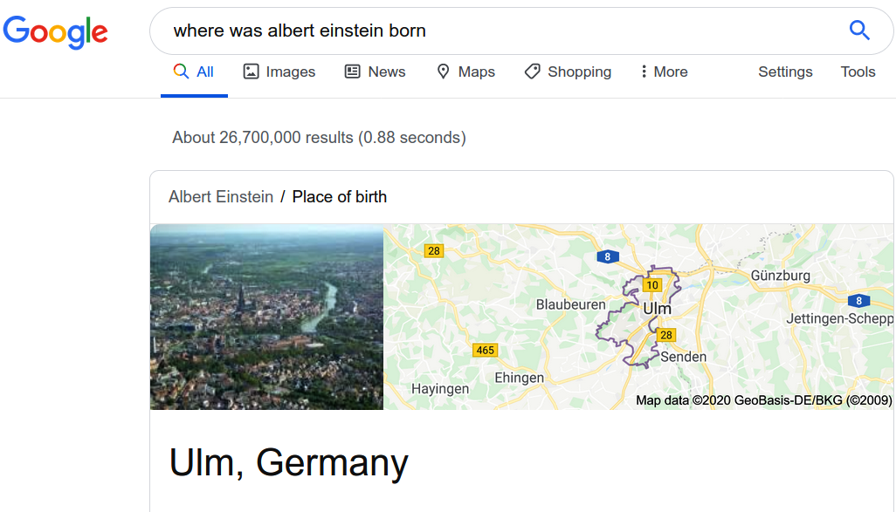
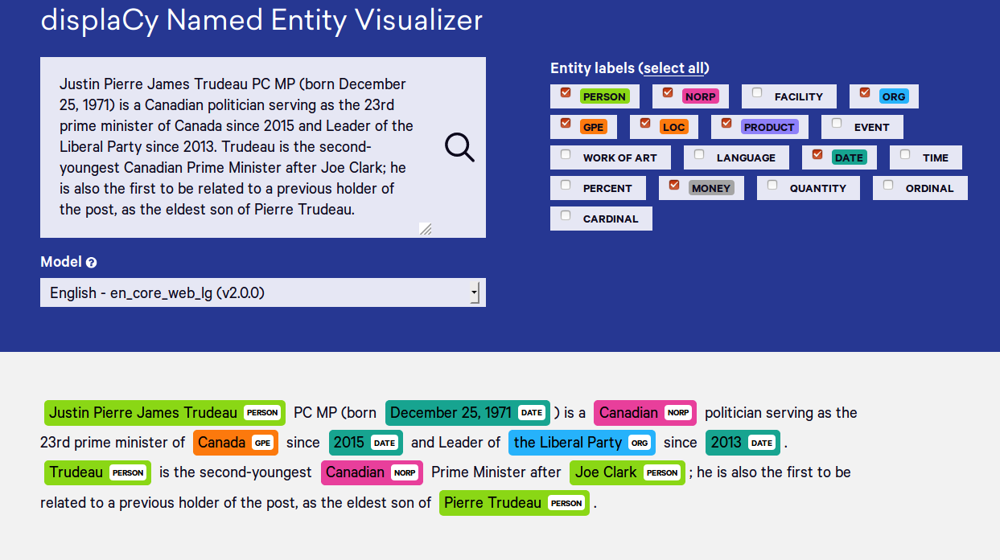

11.1 Named Entity Recognition
Find people, places, organizations, and similar spans.
These notes walk through the lecture slides. The original deck is unchanged; use (slides) on the course hub if you want that PDF.
1. What NER is
A user types "Where was Albert Einstein born?" The search engine cannot answer Ulm, Germany unless it first sees that Albert Einstein is a person. That step is named entity recognition (NER).

NER finds spans in a document and labels each span with a type: person, location, organization, money, date, product, law, and whatever else your domain needs. It is not the same as keyword search. The string Apple is a company in one sentence and a fruit in another.
2. Why it sits in so many pipelines
NER is the IE step that later tasks wait on. Relation extraction and event extraction need entities first. Machine translation often leaves names untranslated. A chatbot fills slots from the same spans.

Common textbook types:
| Type | Examples |
|---|---|
| PERSON | Albert Einstein, Luca Maestri |
| ORG | Apple, the New York Times |
| GPE / LOC | Ulm, Germany, San Francisco |
| DATE / TIME | Tuesday, last year |
| MONEY | $75 billion |
Industry projects add types: drug names, SKUs, statute numbers, ticker symbols. The algorithm is the same idea. The label set is yours.
3. Gazetteers and rules
The simplest NER is a gazetteer: a list of client names, cities, and products you care about. Lookup is fast. If the list covers most of what you see, start there.
Gazetteers fail on new names, on aliases (USA vs United States), and on anything not in the file. You then need a process to update the list.
Rule-based NER uses token and POS patterns. A pattern like NNP was born says the proper noun is a person. Rules are precise on the cases you wrote and silent on the rest. They also break when the wording moves.
Use lists and rules as a baseline or as a fallback. Do not expect them to be the whole system once names are open-ended.
4. NER as sequence labeling
The practical approach is a model that, for each token, decides: is this an entity, and if so, of what type?
That sounds like classification. The difference is context. A sentiment classifier can score a sentence without looking at the next one. NER cannot. If the previous token was B-PERSON, the current token is more likely I-PERSON (the last name) than a new organization.
This is sequence labeling, the same family as POS tagging. Standard encodings:
| Tag | Meaning |
|---|---|
O |
Not an entity |
B-TYPE |
Beginning of a span of that type |
I-TYPE |
Inside / continuation of that span |
Training data is token-level. Evaluation is usually span-level F1: the whole name and the type must match.
Features that used to be hand-built (shape, prefixes, surrounding POS) are now often learned by a bidirectional LSTM or a transformer. The modeling idea does not change: predict a tag path that is consistent left to right.
5. What this week is for
By the end of note 11.1 you should be able to:
- define NER and name the common entity types
- contrast a gazetteer, a rule list, and a sequence model
- explain why NER is sequence labeling and not document classification
Note 11.2 is what you do after you have the spans: linking and relations.
6. Practice
-
Why does a gazetteer struggle with J. K. Rowling if it only stores Joanne Rowling?
-
Tag
Ulm , GermanywithB-/I-/Oif both tokens are a location. Then tag it if onlyUlmis the location. -
A movie-review sentiment model ignores neighboring sentences. Why is that usually fine for sentiment and usually wrong for NER?